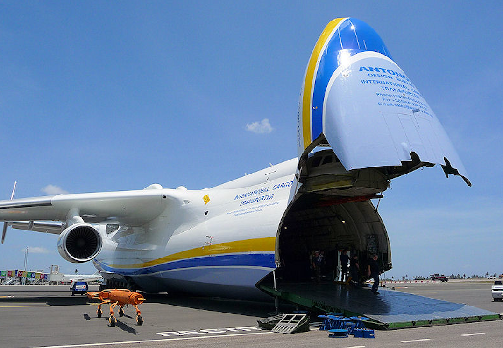
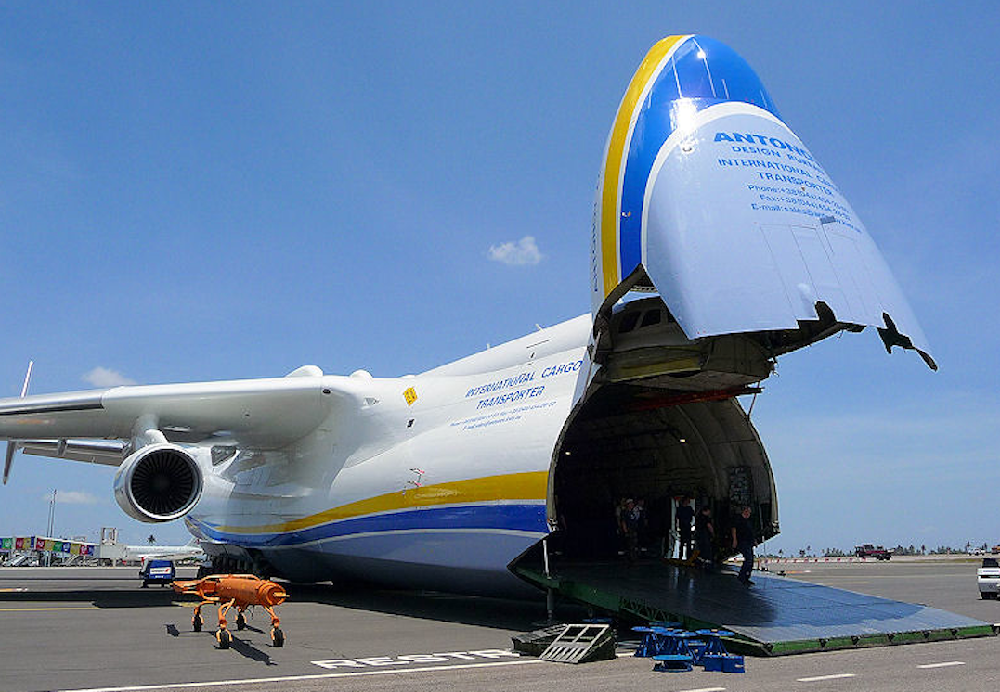

| Пасажирські | Вантажні | Приватні |
|---|---|---|
 |
 |  |
| Airbus A350 | АН-225 "Мрія" | Gulfstream G700 |
| Комерційні авіалінії, чартерні польоти | Вантажні авіалінії, логістичні перевізники | Приватні літаки, корпоративні повітряні судна |
| Пасажирські | Вантажні | Приватні |
|---|---|---|
|
 | |
| Airbus A350 | АН-225 "Мрія" | Gulfstream G700 |
| Комерційні авіалінії, чартерні польоти | Вантажні авіалінії, логістичні перевізники | Приватні літаки, корпоративні повітряні судна |
Комерційні польоти є основним видом авіаційної діяльності, забезпечуючи мільйонам пасажирів швидкий та зручний спосіб пересування. Авіакомпанії, такі як "Lufthansa", "Emirates", "Delta Airlines", пропонують різні класи обслуговування, від економічного до першого класу, а також широкий спектр послуг, включаючи ресторани, розваги та комфортні сидіння. Комерційні польоти можуть бути регулярними рейсами або чартерними польотами, які організовуються для спеціальних подій або групових подорожей.
Вантажні польоти відіграють ключову роль у світовій торгівлі, забезпечуючи доставку товарів на великі відстані. Вантажні авіалінії, такі як "UPS Airlines", "FedEx Express", спеціалізуються на перевезенні різноманітних товарів, від легких посилок до важких вантажів та навіть живої тварини. Ці польоти забезпечують швидку та ефективну доставку вантажів, використовуючи спеціальні літаки та системи логістики.
Приватні польоти надають ексклюзивність та зручність для корпоративних та особистих клієнтів. Компанії та приватні особи можуть орендувати чи володіти приватними літаками для особистих подорожей, бізнес-зустрічей, або для надання послуг аеротаксі. Приватні літаки можуть бути розкішними бізнес-джетами, як Gulfstream G700, або малими однодвигунними літаками для коротких подорожей. Ці польоти забезпечують гнучкість та приватність, що не завжди доступні на комерційних авіалініях.